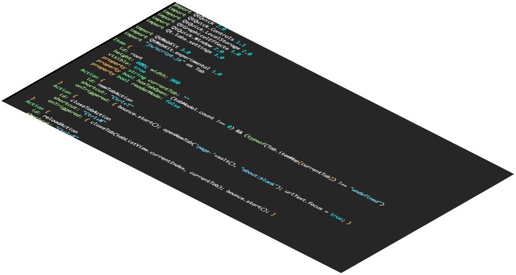
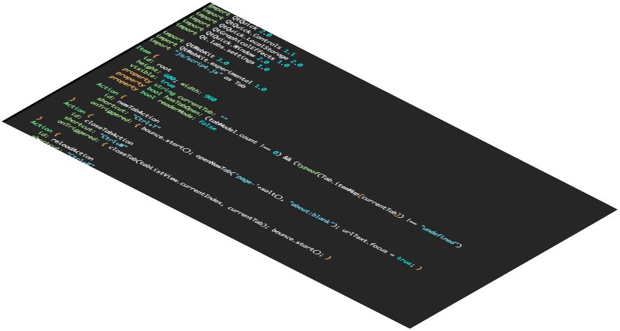
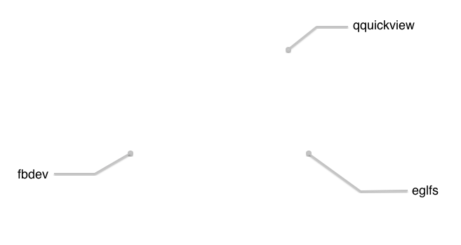
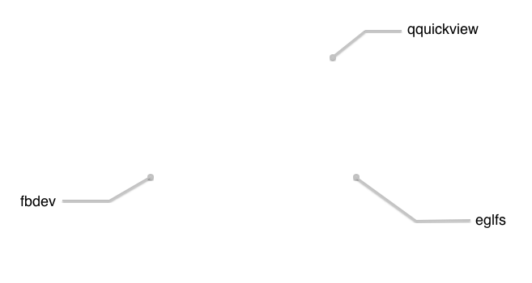
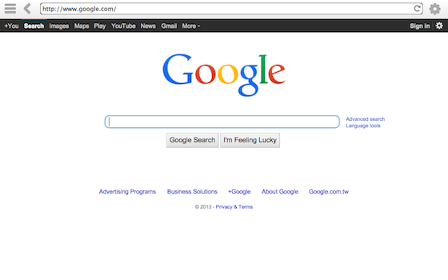

-
SlateKit - Tablet UX Building Kit
Ever dream about designing a tablet? Want to have an entirely new interface running on a rooted Android device? Here's the the best building blocks:
- Ready to Use Graphic Environment
- Easily Customizable Applications
- Multiple Platform Support for x86/ARM
-
Download Image
Or check out Source Code on Github
-
QtQuick Powered
SlateKit is written in QML and JavaScript, thanks to Qt5, this makes it trivial to customize. With tools like QML LiveReload, live preview on device while editing is made possible.
Learn more about SlateKit Shell

-
 

 

-
Standalone UI
SlateKit works on bare metal. Relies on nothing but EGL and framebuffer, there's no need of display server like Xorg or Wayland, hence reduced size of image and porting effort.
-
Single View
Components consist in one single view, plus the libhybris HW adaption layer, SlateKit has great cross-platform compatibility and supports many Android running devices.
-
